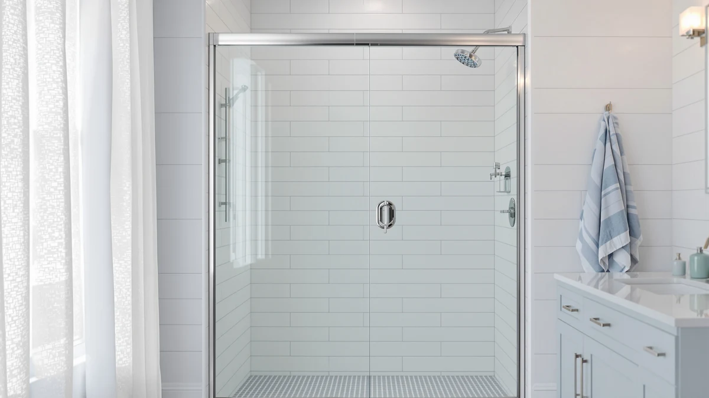

How to Fix a Leaking Shower Door (2026): Seals, Sweeps & Fixes
Prices and picks verified as of August 2026. Independent, reader-supported reviews.


Things to Know Before You Buy
- A leaking shower door almost always traces back to one worn part: the bottom sweep, the side seal, or the threshold, not the glass itself.
- Most fixes take under an hour and cost less than $25 in replacement parts.
- Measure your door's glass thickness before you buy a seal. Frameless doors usually run 3/8 inch, while framed doors use thinner glass with a different channel width.
- A door that closes but still leaks often needs a new sweep more than it needs caulk.
- If water pools on the bathroom floor within minutes of closing the door, check the threshold first. That points to a drainage or slope issue rather than a seal problem.
How to fix a leaking shower door usually comes down to identifying which part failed: the bottom sweep, a side seal, or the threshold where the door meets the floor. Water rarely gets through the glass itself. It sneaks through a gap left by a part that has cracked, flattened, or pulled away from the frame.
We researched replacement parts across dozens of verified owner reviews and compared them against common door types, glass thicknesses, and price points. The Butecare frameless seal strip stands out for fit and value on standard 3/8-inch glass, and we walk through exactly where it and the other picks below fit into the five-step fix.
What You'll Need
- Supplies: replacement door sweep or seal strip, 100% silicone caulk, isopropyl alcohol
- Tools: utility knife, caulk gun
Step 1: Find the source of the leak
Diagnosing a leaking shower door before you buy any parts saves you a wasted trip to the hardware store. Close the door, turn on the water, and watch the bottom edge, the side where the door meets the frame or the fixed panel, and the threshold at floor level. Most leaks come from a single one of these three spots, and each one calls for a different fix.
Look closely at the door sweep first. It is the strip of vinyl or rubber running along the bottom of the door, and it takes the most wear because it drags across the track or threshold every time you open and close the door. A sweep that has gone stiff, cracked, or flattened on one side will let water pass underneath even when the door looks properly closed. Next, check the vertical seal along the hinge or the edge where a sliding door overlaps its neighbor. Run your finger along it. If it feels brittle or you can see daylight through a gap, that is your leak.
If both the sweep and side seals look intact but water still escapes, the problem is likely the threshold or the shower pan's slope. Water that pools right outside the door within a minute of the shower running points to drainage rather than a worn part, and no amount of new caulk will fix that on its own.
Step 2: Remove the damaged seal or sweep
Once you know which part failed, take it off. Most door sweeps and side seals simply slide onto the edge of the glass or snap into a track, so you can usually pull them free by hand, working from one end to the other. If a seal has been in place for years, the vinyl may have fused slightly to the glass. In that case, use a utility knife to gently pry up one corner, then peel the rest away in a slow, steady motion instead of yanking it, which can leave torn fragments behind.
Check the door edge, frame channel, or threshold for old caulk or adhesive once the part is off. A utility knife works well here too, held at a low angle so you scrape the residue away without scratching the glass or gouging the aluminum frame. Take your time on this step. A new seal installed over old caulk residue or grime will not sit flush, and that gap defeats the purpose of replacing it in the first place.
Step 3: Clean and dry the door edge and track
Wipe down the glass edge, frame, and track with isopropyl alcohol on a clean cloth. This step matters more than it looks. Soap scum and mineral deposits are common on shower glass, and both prevent adhesive-backed seals from bonding and keep press-fit sweeps from seating tightly. Alcohol cuts through that residue and evaporates quickly without leaving streaks the way household glass cleaner can.
Let the surface air-dry fully before moving on. If you are also going to caulk the fixed panel or threshold in a later step, dry time matters even more, since silicone caulk applied over a damp surface will not cure properly and can peel away within weeks. A few minutes of patience here is what separates a fix that lasts from one you will be redoing next month.
Step 4: Install the new seal, sweep, or threshold
Measure your door's width or the glass panel's height, then trim the replacement part with a utility knife so it runs the full length without overhanging either end. Most seal strips and sweeps slide directly onto the edge of the glass using a built-in channel, so you press them on gradually from one side to the other rather than forcing the whole length on at once. A dry-fit check before you commit helps here. Slide the piece on, then take it back off if the fit binds or leaves a visible gap, and adjust your cut.
For a threshold barrier, position it along the base of the door opening according to the manufacturer's marks and press it firmly into place so it sits flat against the shower pan with no lifted edges. Owners who have installed similar threshold strips report that the biggest mistake is rushing this step. A barrier that is slightly crooked redirects water toward the room instead of back into the shower, which defeats the purpose of installing it.
Step 5: Test the door and caulk any remaining gaps
Close the door and run the shower for three to five minutes, checking the floor outside the enclosure the whole time. Watch the exact spots you identified in step one. A properly seated sweep or seal should stop the drip entirely, and any water you still see tells you precisely where more work is needed rather than leaving you guessing.
For any gap that still lets water through, load a caulk gun with 100% silicone caulk and apply a thin, continuous bead along the seam, then smooth it with a wet finger for an even line. Avoid caulking the moving edge of a door that opens and closes. That will glue it shut. Caulk belongs only on fixed joints, like where a stationary glass panel meets the wall or the base of a threshold barrier meets the shower pan. Let the caulk cure for the time listed on the tube, usually 24 hours, before running the shower again.
Common Mistakes to Avoid
The biggest mistake people make when learning how to fix a leaking shower door is reaching for caulk before replacing the worn part underneath it. Caulk is a patch, not a fix, and slathering it over a cracked sweep or a gapped seal hides the problem for a few weeks before it reappears. Diagnose the actual source first, then caulk only the fixed joints that need it.
Buying a replacement seal without measuring your glass thickness is another common misstep. Frameless doors typically use 3/8-inch glass, while framed doors run thinner, and a seal sized for the wrong thickness will either fall off or refuse to seat. Check the specs on the listing against your own measurement before you order.
Caulking a door's moving edge is a mistake that turns a small leak into a bigger problem. Once silicone cures on a hinge or sliding track, the door either sticks or stops closing altogether. Keep caulk to stationary seams only.
Finally, skipping the cleaning step undermines everything else. Soap scum and mineral buildup keep adhesive from bonding and prevent press-fit seals from sitting flush against the glass. A five-minute wipe-down with isopropyl alcohol is what makes the difference between a repair that holds and one you will be redoing within a month.
Our Top Picks
These are the replacement parts we'd reach for first when fixing a leaking shower door, based on fit, price, and what verified buyers report after installing them.

Editor's Pick
2-Pack Butecare Frameless Shower Door
The best fit for most frameless doors with standard 3/8-inch glass. Reviewers consistently note it closes the vertical gap that sweeps alone can't reach.
$21.99
Check Price on Amazon
Best Value
AmazerBath 3 PCS Shower Door
A three-piece set covering the sweep and both side seals at once, which makes it the cheapest way to replace every worn part in a single order.
$8.99
Check Price on Amazon
Premium Choice
Zengest Shower Glass Door Seal
A clear vinyl profile that stays nearly invisible once installed, a good pick if you want the fix to blend in rather than stand out against the glass.
$11.99
Check Price on AmazonFrequently Asked Questions
What's the most common cause of a leaking shower door?
A cracked or flattened vinyl door sweep is the most common cause. Sweeps sit at the bottom of the door where they take the most abuse from water, soap scum, and foot traffic, and they typically wear out within two to three years.
Do I need to caulk a frameless shower door?
Most frameless doors rely on a magnetic or vinyl seal strip rather than caulk along the moving edge, but the fixed glass panel next to the wall usually needs a bead of silicone caulk to stop water from seeping behind it.
How do I know if my shower door seal needs replacing?
Run your finger along the seal. If it feels stiff, cracked, or no longer springs back into shape, water is getting past it. Visible gaps, mineral crust, or puddles outside the door after every shower are also reliable signs.
Can I fix a leaking shower door without replacing the whole door?
Yes. Most leaks come from a worn sweep, seal, or threshold rather than a problem with the door itself. Replacing the specific part that failed usually solves the leak for $10 to $25 and takes under an hour.
How long does a shower door seal typically last?
Most vinyl seals and sweeps hold up for two to three years of daily use before the material stiffens or cracks. Hard water and frequent cleaning with harsh chemicals can shorten that lifespan.
Verdict
Now you know how to fix a leaking shower door: find the failed part, remove it, clean the surface, install the replacement, and confirm the fix with a real shower test. Most leaks come down to a worn sweep or side seal rather than a problem with the glass or the door itself, and swapping that one part typically solves it for under $25. For frameless doors on standard 3/8-inch glass, the Butecare seal strip is our starting point, since it matches the most common gap width and reviewers consistently report a clean, snug fit. If your door uses a different seal channel or you'd rather replace every worn part at once, the AmazerBath three-piece set covers the sweep and both side seals for less than the cost of buying them separately.
Whichever part you're replacing, take the time to clean the glass and track before installing anything new. That single step, more than the brand of seal you choose, determines whether the fix lasts a season or several years.